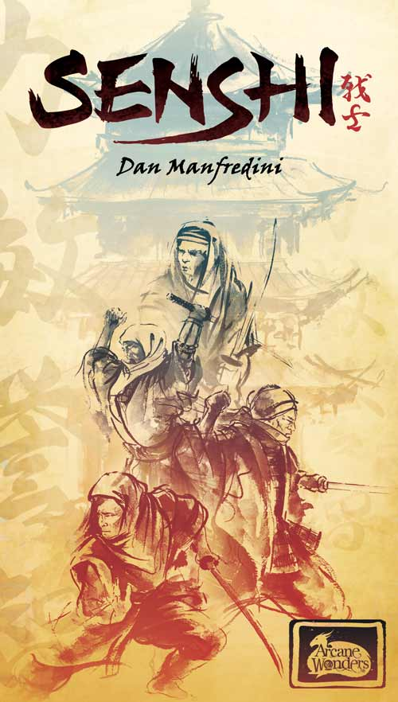
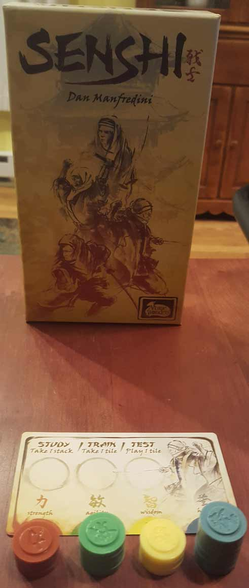
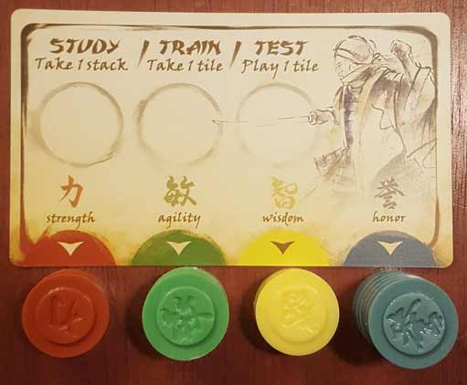
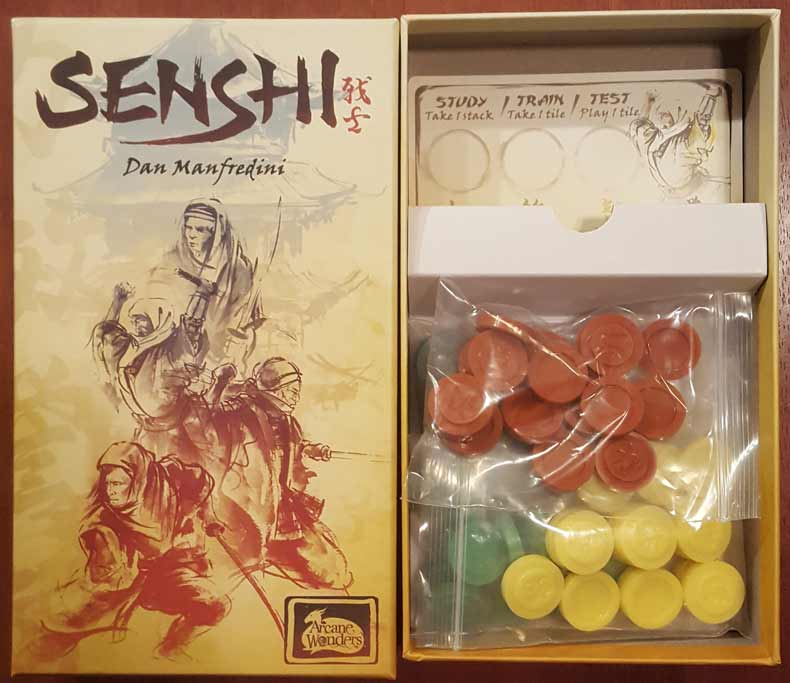
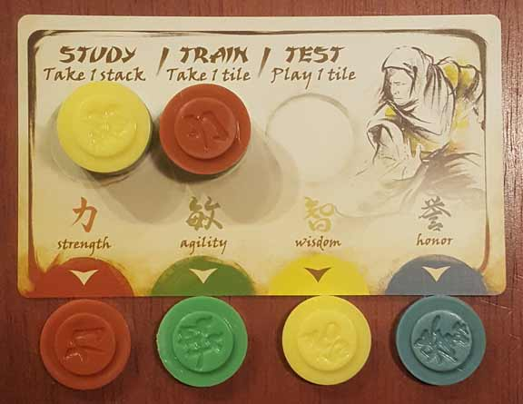
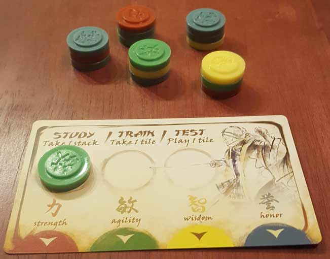
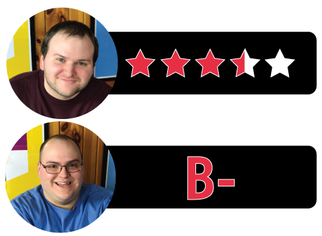

In this Senshi review, D and Will break down the new, abstract strategy game from designer Dan Manfredini and publisher Arcane Wonders. In this game, players take on the roles of warrior monks whose master is dying and seeking a successor. In order to earn the spot, the warrior monks must study, train, and test four different abilities: strength, agility, wisdom, and honor. These attributes are represented by colorful, stackable discs or “tiles”. How well does this simple abstract game work? We try to answer that below.

D reviews Senshi
 (Author’s
note: this review is meant to accompany our gameplay video and will not
go in-depth on the game’s rules. If you’re interested in learning how
the game is played, please watch the video. It’s not bad.)
(Author’s
note: this review is meant to accompany our gameplay video and will not
go in-depth on the game’s rules. If you’re interested in learning how
the game is played, please watch the video. It’s not bad.)
I didn’t have the highest of hopes for Senshi when I was reading through its rulebook for the first time. The game is advertised as having a 15-minute playtime, which meant that it was probably going to be light as a feather, and nothing in the rules seemed to contradict that. Now, there’s nothing wrong with a light game. In fact, I’ve asserted the values of lighter games in some of my previous reviews here on this website. But there exists a point where a game can become too slight and too simple to actually be any good, and I was worried that Senshi might have gone beyond this point. After having played it, I can confirm that the game is very light and actually can be played in about 15 minutes, but I also found it to be a surprisingly fun experience.
Senshi doesn’t have a ton of depth, but the little bit it does have goes a long way. While the game is certainly simple enough to be played by basically all ages, some thought and strategy is definitely required in order to win. The game has a couple of interesting mechanics. The first being that when one player scores by performing the “test” action, all other players may also score the same color, if able. This means that the game isn’t always just a rush to score your own tiles as quickly as possible. In fact, depending on your opponents’ stacks, it may be in your best interest to avoid the test action as long as possible and let them take the action instead. Also, the way the winner is determined is pretty clever. Instead of just rewarding the player who has the most tiles played, it instead rewards balance. So, a player with a lot of tiles in three attributes but few or none in the fourth will not be able to win the game. This forces some planning and consideration on the player’s part. Both of these mechanics also work well with the game’s monks-in-training theme. The test action symbolizes the players working and growing in skill together, while rewarding balance makes sense as someone could hardly be considered a master if they are deficient in one or more ways. Overall, the game is mostly well-designed.
However, I do have an issue with the ability to steal a tile from an opponent during the “train” action. It feels more gamey than thematically appropriate. What do the tiles actually represent before they’re scored, and why is it possible/acceptable to steal them from others? It just doesn’t make too much sense to me and seems very un-monk-like. I can appreciate that it might add a bit of extra strategy and drama to the proceedings, but I’m not sure that it’s a necessary mechanic. Otherwise, I don’t have any other major complaints. Compared to Onitama, a similarly-themed Arcane Wonders game that we’ve played, Senshi doesn’t quite ooze its Eastern influences as much, nor does it seem to have the same production values. But not every game is going to be a prestige title, and it’s probably best that things were kept a bit more basic for Senshi. It keeps the price down and that should, in turn, increase sales.
Honestly, I can see Senshi fitting into the same space in our off-camera gaming lives that Hanabi and the aforementioned Onitama currently occupy. Games that are quick, easy to learn, don’t require a lot of setup or clean-up, and (most importantly) fun. You don’t have to be an enthusiast to enjoy a game like this, and if you are an enthusiast, there’s still something here to be enjoyed. It’s certainly not a perfect game, or even a great game, but Senshi is a worthwhile experience that I’m glad we have in our collection.
D’s Rating: Three and One-Half Stars out of Five.
Will reviews Senshi
 You
are a warrior monk, studying and training under your Master at a temple
in competition with your fellow monks. Hmm, this sounds like another
game we played on our channel… oh yeah, I’m describing Onitama.
Oh wait, actually I’m not, although the game I’m referring to comes
from the same publisher, Arcane Wonders. In actuality, I’m talking about
Senshi, another light, intuitive game that makes use of the
Asian-monk-theme. Sure, the theme here is a little derivative at this
point, but the gameplay itself is rather unique. And somewhat
surprisingly to me, I quite like it.
You
are a warrior monk, studying and training under your Master at a temple
in competition with your fellow monks. Hmm, this sounds like another
game we played on our channel… oh yeah, I’m describing Onitama.
Oh wait, actually I’m not, although the game I’m referring to comes
from the same publisher, Arcane Wonders. In actuality, I’m talking about
Senshi, another light, intuitive game that makes use of the
Asian-monk-theme. Sure, the theme here is a little derivative at this
point, but the gameplay itself is rather unique. And somewhat
surprisingly to me, I quite like it.
From a component standpoint, there’s basically nothing to Senshi. Inside its box, you’ll get four Training Cards, 72 plastic Attribute Tiles, and a concise rulebook – that’s it. Build quality is nothing special here, and this kind of feels like a missed opportunity. I’m specifically referring to the circular, stackable Attribute Tiles that are constructed from passable but cheap-feeling plastic. If these had been made from wood or even better, a durable ceramic, Senshi would’ve felt so much more impressive. Alas, they’re plastic, but that does mean the game only costs $15-20, which is really affordable.
Gameplay consists of three, easy to learn actions: study, train, or test. After randomly building stacks of three tiles and placing them in the middle of the table, you’ll choose and execute one of these actions on your turn. The first possible action, Study, is really important and thematically appropriate, especially at the beginning of the game. When you study, you place one stack of tiles on your Training Card. Now, I should point out that I view the Attribute Tiles as books or lessons. They aren’t ever referred to as thus in the rulebook, but they serve the same purpose thematically. The more of them you “study” and eventually “test”, the more knowledge and skill you’ll gain in the four Attribute categories. You’ll want to collect as many stacks as your can early in the game because when another player eventually tests, you can follow that action, but only using the Attribute Tiles from your card. In a real life temple, I’d imagine you’d similarly want to study as much as possible early on as well. Again, this portion of the gameplay makes a lot of thematic sense.
Unlike anything else I’ve ever played, Senshi requires you to hold a bunch of game pieces in your hand, literally, at all times. You need to do this in order to execute the game’s second action, Train. When you train, take ANY tile – whether it’s from the center of the table, your card, or someone else’s card – and add it to the secret collection amassing in your closed fist. Problem is, I really don’t see how this fits into the theme. Sure, monks have to train themselves in martial arts and discipline, but do they do it by ostensibly stealing knowledge? I guess if you were to take a tile from the table or your own card, that’s not stealing. But pilfering one from your opponent’s stack? I don’t know – that doesn’t feel very monk-like to me.
All of this studying and training leads to the most important action in Senshi, to Test. When you test, you place one of the tiles in your hand under your card on the spot of the corresponding color. As I pointed out earlier, everyone can follow this action by taking tiles of the same color from the top of their stacks and placing them, so you’ll want to strategize around that. Is it beneficial to test and place red tiles when one of my opponents can do that twice? These are the kind of questions you’ll ask yourself constantly when playing Senshi. I cannot praise this game enough for this part of the gameplay – it’s that strategic and stimulating. Minimizing actions that are beneficial to your opponents becomes the best and most consequential part of the game. And it makes thematic sense, in that you could easily interpret your opponents following as “cheating” on the test. After all, they’re not the one testing; you are.
None of this matters though if the endgame conditions stink, but luckily that’s not the case here. Your goal is to have the most Attribute Tiles in one of the four categories (or colors) at the end of the game. Sounds easy enough, right? Well there’s a caveat: the player (or players) with the shortest stack of tiles automatically loses and is eliminated. It can lead to moments where you think, “Yay, I have seven yellow – that’s the most! Oh wait, I only have two red…”, aaand you’re out. Remember, the best monk is a well rounded monk. So in a way, the goal isn’t to be the strongest monk or the most honorable monk, it’s to be the best monk. Having to balance going for the tallest stack against acquiring a wide mix of tiles is really challenging, but also surprisingly satisfying. And again, this all meshes with Senshi’s theme.
However, there are some issues here. For one, I don’t foresee this game ever becoming a favorite of our table. All of our sessions so far have been very short and very close, almost to the extent that they’re identical in memory. I could easily see this repetition becoming tiresome for players, and for that reason, I recommend playing Senshi sparingly. More worryingly, I’m beginning to notice a problem with player agency here. Normally in a board game, most of your strategies revolve around what you are going to do, even when you’re reacting to your opponents’ moves. In Senshi though, instead of thinking that way, I find myself planning around other players and what colors they need to place. In other words, I let my opponents play the game for me at times, and this happens too often. Yes, there’s definitely skill involved in reading your opponents, but too much reliance on this and all of a sudden, you start feeling like you don’t personally have enough agency on what’s happening in game.
Overall though, Senshi has left me feeling rather happy. There aren’t many games that are simultaneously abstract and thematic, which seems contradictory but isn’t here. In order to really notice the theme, you have to use your imagination, which means everyone will get something different out of the experience. I commend Senshi for being this way – it makes me feel smart, even if I’m arguably a dullard. The gameplay is more hit-or-miss, but when it hits, it feels incredibly satisfying. Senshi is very simple though, and with simplicity comes repetition and shallowness, so keep that in mind. When I bought Senshi, with its few components, I didn’t know what to expect. It ended up really surprising me, mostly in a good way. If you have $15-20 lying around, I recommend giving it a shot – it might surprise you too.
I give Senshi a: B-
Senshi Review – Board Crazy’s Ratings

Leave a Reply
You must be logged in to post a comment.